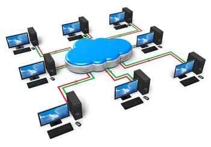

Computer Networks
A computer network is a system in which multiple computers are connected to each other to share information and resources.

Characteristics of Computer Networking
- Share resources from one computer to another.
- Create files and store them in one computer, access those files from the other computer(s) connected over the network.
- Connect a printer, scanner, or a fax machine to one computer within the network and let other computers of the network use the machines available over the network.
Network Cables
Network cables are used to connect computers. The most commonly used cable is Category 5 cable RJ-45.

Distributor
A computer can be connected to another one via a serial port but if we need to connect many computers to produce a network, this serial connection will not work.
The solution is to use a central body to which other computers, printers, scanners, etc. can be connected and then this body will manage or distribute network traffic.
Router
A router is a type of device which acts as the central point among computers and other devices that are a part of the network. It is equipped with holes called ports. Computers and other devices are connected to a router using network cables. Now-a-days router comes in wireless modes using which computers can be connected without any physical cable.
Network Card
Network card is a necessary component of a computer without which a computer cannot be connected over a network. It is also known as the network adapter or Network Interface Card (NIC). Most branded computers have network card pre-installed. Network cards are of two types: Internal and External Network Cards.
Internal Network Card
Motherboard has a slot for internal network card where it is to be inserted. Internal network cards are of two types in which the first type uses Peripheral Component Interconnect (PCI) connection, while the second type uses Industry Standard Architecture (ISA). Network cables are required to provide network access.
External Network Card
External network cards are of two types: Wireless and USB based. Wireless network card needs to be inserted into the motherboard, however no network cable is required to connect to the network.